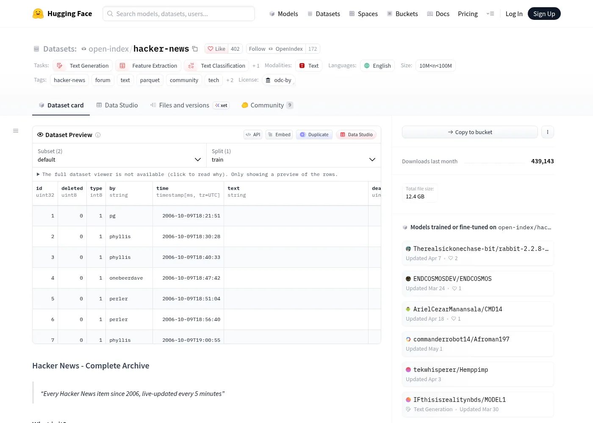
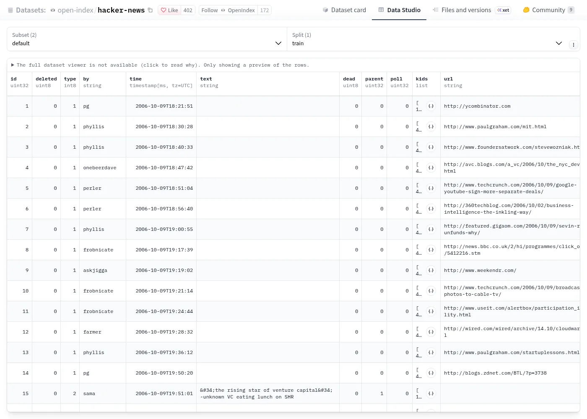

open-index/hacker-news 是 Hugging Face 上一个把 Hacker News 二十年全部条目（故事、评论、Ask/Show HN、招聘、投票）整理成按月 Parquet 文件的公开数据集，ODC-By 1.0 许可，可以用 DuckDB 直接在线查询而不必下载。本页是中文导读，并在文末附数据集卡片的全文中译与英文原文。所有数字均于 2026-11-02 对照卡片、Hub 公开 API 与仓库内 stats.csv 核对；与卡片自述不符处一一标出。

一、这是什么
一句话：Hacker News 全站条目的 Parquet 镜像。HN 的每一个“条目”（item）共用一套 ID：故事、评论、投票、投票选项、招聘帖都是 item，靠 parent / kids 串成讨论树。这个数据集原样保留了这套结构，每月一个文件，按 id 排序，另有一个 today/ 目录放当天每 5 分钟抓一次的增量块。
卡片定位是“研究、分析和训练”：语言模型预训练/微调、技术话题趋势、社区动态研究、检索与推荐基准。
二、谁做的
- 发布方：Hugging Face 组织 OpenIndex（open-index），公开资料显示 2 名成员、31 个数据集（另有 hacker-news-rss、hacker-news-text-search、open-github、open-arxiv、Common Crawl 衍生集等）。仓库提交作者显示为用户
tamnd。⚠️ 组织背后的个人或机构身份，卡片与组织页均未说明。 - 数据上游：历史数据取自 ClickHouse, Inc. 维护的公共 SQL 端点 ClickHouse Playground（它镜像官方 HN Firebase API），实时增量直接调 HN Firebase API。
- 内容权利人：HN 社区的各位作者；网站由 Y Combinator 运营。卡片声明本数据集是独立镜像，与 Y Combinator、ClickHouse 均无隶属、无背书。
- 利益关系：卡片没有推广付费产品，致谢 ClickHouse 属于来源说明。“我们认为这是 Hugging Face 上最完整、更新最规律的 HN 镜像之一”是发布方自我评价 ⚠️，本站未做横向比较。
三、规模与结构
本站以仓库内的 stats.csv（每个已提交月份一行，约 15 KB）和 Hub 公开 API 为准，核对结果如下：
| 项 | 核对值（2026-11-02） | 来源 |
|---|---|---|
| 覆盖时间 | 2006-10 → 2026-08（最后一个月度文件于 2026-08-22 09:19 UTC 提交） | stats.csv |
| 月度文件 | 239 个；其中 2006-11、2007-01 两个月为 0 条 | stats.csv / API 文件列表 |
| 条目总数 | 49,324,111（月度文件合计） | stats.csv |
| 最大条目 ID | 49,395,220 | stats.csv |
| 按类型（卡片） | 评论 43,062,301 · 故事 6,265,054 · 招聘 18,211 · 投票 2,261 · 投票选项 15,878（合计 49,363,705） | 卡片 Content breakdown |
| 文件体积 | 当前文件约 12.4 GB（Parquet，Zstd 22 级压缩）；含历史版本的仓库占用约 25.8 GB | Hub API / 页面右栏 |
| 单年体积 | 2024 全年约 0.53 GB（卡片写“约 1.5 GB” ⚠️ 与 stats.csv 不符） | stats.csv |
| 热度 | 上月下载 439,143 · 402 个赞 | Hub API |
| 年峰值 | 2023 年 4,587,333 条（单月最多 407,941 条） | stats.csv |
字段（16 列）：id、deleted、type（1 故事 / 2 评论 / 3 投票 / 4 投票选项 / 5 招聘）、by（用户名）、time（UTC）、text（原始 HTML）、dead、parent、poll、kids、url、score、title、parts、descendants（讨论树评论总数）、words（从标题与正文切出的词）。与官方 HN API 的 item 格式一致，只是布尔值和类型改成了整数，外加一列 words。

parent=1。四、怎么构建、怎么更新
- 历史回填：Go 写的管线逐月向 ClickHouse Playground 发一条带时间边界的 SQL，用 DuckDB 写成按
id排序的 Parquet，连同stats.csv、README.md一起提交；已在stats.csv里的月份跳过，可断点续跑。 - 实时轮询：每 5 分钟调一次 HN Firebase API，取水位线之后的新 ID，按 5 分钟时间窗写入
today/YYYY/MM/DD/HH/MM.parquet。 - 日切换：UTC 午夜把当月整月从 ClickHouse 重抓一遍，覆盖月度文件，并在同一提交里删掉当天的 5 分钟块。
卡片称除上游提供的内容外不做任何过滤、去重或转换，deleted / dead 条目也原样保留。
⚠️ 更新现状（本站核对，2026-11-02）：卡片标题写“每 5 分钟实时更新”，但仓库最后一次提交是 2026-08-23 16:25 UTC（UTC+8 2026-08-24 00:25），此后约 70 天无新提交；today/ 目录仍留有 385 个 5 分钟块，时间从 2026-04-29 到 2026-08-23，与“午夜删除当天块”的描述不一致。⚠️ 推断：实时管线自 8 月下旬起已停止，最新数据止于 2026-08-23 前后。需要 8 月之后数据的读者应自行从 HN API 或 ClickHouse 补抓。
五、怎么用（不必整库下载）
最省事的是 DuckDB 通过 hf:// 路径直接读远端 Parquet，只拉取查询用到的列和行组：
-- 史上得分最高的 20 篇故事（type = 1；"by" 必须加引号）
SELECT id, title, "by", score, url, time
FROM read_parquet('hf://datasets/open-index/hacker-news/data/*/*.parquet')
WHERE type = 1 AND title != ''
ORDER BY score DESC
LIMIT 20;Python 里用 datasets 流式读取，或只取一年：
from datasets import load_dataset
# 流式遍历全部历史，不落盘
ds = load_dataset("open-index/hacker-news", split="train", streaming=True)
# 只加载 2024 年（约 0.53 GB）
ds24 = load_dataset("open-index/hacker-news",
data_files="data/2024/*.parquet", split="train")只下载某一个月：
huggingface-cli download open-index/hacker-news \
data/2024/2024-01.parquet --repo-type dataset --local-dir ./hn/先看逐月统计再决定拉多少：SELECT * FROM read_csv_auto('hf://datasets/open-index/hacker-news/stats.csv')。⚠️ 以上代码取自卡片，本站未实际运行。
几个容易踩的坑（卡片“已知局限”）：type、deleted、dead 都是整数；by 是 DuckDB 保留字；text 是带实体转义的 HTML，代码段在 <code> 里；已删除条目大部分字段为空；score 是 ClickHouse 最后同步时的快照；不含用户资料（karma、简介）。
六、适合做什么
- 技术话题趋势：某个语言、框架、公司名在标题里的逐年出现频率。
- 讨论树研究：用
parent/kids/descendants重建线程，研究争议度、回复深度、审核（dead）。 - 检索与推荐基准：Ask HN 问题 + 高赞回答天然是问答对。
- 语言模型语料：技术英语对话。注意版权与许可的分层（见第八节）。
- 链接分析：故事外链域名分布（卡片榜单：github.com 213,999 篇居首，其次 YouTube、Medium、NYT）。
七、局限与本站发现的出入
- 卡片开头的数字已失真 ⚠️：“存档覆盖 2026-08 至 2026-08-23，已提交 280,019 条”和“按年分布只有 2026 年 275.2K”与同一卡片后文的 4,900 余万条、以及
stats.csv的 239 个月明显矛盾。⚠️ 推断：自动生成 README 的程序只统计了当月状态，这两处不能代表全库。 - 得分统计自相矛盾 ⚠️：卡片称故事平均分 1.5、100 分以上故事 176,015 篇；但仅这 17.6 万篇就能把 626.5 万篇故事的平均分推到至少 2.8，平均 1.5 不可能成立。“平均每篇故事 23.4 条评论”也与 4,306 万评论 ÷ 627 万故事 ≈ 6.9 不符（⚠️ 可能是只算有评论的故事，卡片未说明）。这些统计请以自己的查询为准。
- 2024 年体积：卡片“约 1.5 GB”，
stats.csv合计约 0.53 GB ⚠️。 - 实时更新已停 ⚠️：见第四节。
- 完整性依赖上游：历史部分完全取决于 ClickHouse Playground 镜像的完整度；2006-11 与 2007-01 两个月为 0 条，是否为真实空档本站未核实 ⚠️。
- 社区偏差：卡片自己写明用户以美国软件工程师、创业者为主，话题偏硅谷与编程；审核机制反映社区价值观而非客观标准。
- 个人信息：含用户名与用户原文，未做 PII 处理；已删除条目保留
id与删除标志。用于训练或公开展示时需自行评估。
八、许可：两层要分开看
- 数据库这一层：卡片与 Hub 元数据均标 ODC-By 1.0（Open Data Commons 署名许可）——可复制、分发、改作、商用，条件是署名并保留许可声明。ODC-By 管的是“数据库”（汇编与结构），不自动覆盖其中的内容。
- 内容这一层：卡片原话：“The original content is subject to the rights of its respective authors.”（原始内容的权利归各自作者所有。）也就是说，每条评论和帖子的著作权仍在原作者手里；HN 的使用条款由 Y Combinator 制定，本次未逐条核对 ⚠️ 未核实。大规模再发布原文或用作商业训练前，应另行评估。
- 上游：ClickHouse Playground 与 HN Firebase API 各自的使用条款同样适用于想复现管线的人 ⚠️ 未核实。
- 本页依据：卡片属于 ODC-By 数据集仓库的一部分，本站据此附上卡片全文中译与英文原文（⚠️ 推断：卡片文字本身的许可未单独声明）。如权利人有异议，请用页尾链接申请撤下。
附录 A：数据集卡片全文中译
译自卡片 README（仓库版本 c54ced5，卡片自署“最后更新 2026-08-23 16:23 UTC”）。数字、代码与表格照原文保留，与第三、七节核对结果不符处以导读为准。
展开：数据集卡片中文全译
Hacker News——完整存档
2006 年以来的每一条 Hacker News 条目，每 5 分钟实时更新
目录
- 这是什么？
- 发布了哪些内容？
- 今日分布
- 按年分布
- 如何下载与使用本数据集
- 数据集统计
- 内容构成
- 社区洞察
- 工作原理
- 数据集卡片
- 数据集概要
- 数据集结构
- 数据集的构建
- 使用数据时的注意事项
- 补充信息
这是什么？
本数据集收录完整的 Hacker News 存档：站上提交过的每一篇故事（story）、评论、Ask HN、Show HN、招聘帖和投票。Hacker News 是互联网上历史最悠久、影响力最大的技术社区之一，自 2007 年起由 Y Combinator 运营。它已成为创始人、工程师、研究者和技术从业者分享、讨论技术要事的事实上的聚集地。
存档目前覆盖 2026-08 至 2026-08-23 16:00 UTC，已提交 280,019 条。新条目每 5 分钟抓取一次，并通过自动化实时管线直接以单独的 Parquet 文件提交，因此数据集与网站本身保持同步。
我们认为，这是 Hugging Face 上最完整、更新最规律的 Hacker News 数据镜像之一。数据按月存为 Parquet 文件，并按条目 ID 排序，便于用 DuckDB 查询、用 datasets 库加载，或用任何能读 Parquet 的工具处理。
发布了哪些内容？
数据集按每个自然月一个 Parquet 文件组织，另有记录当天动态的 5 分钟实时文件。每 5 分钟，从数据源抓取新条目并作为一个 Parquet 块直接提交。UTC 午夜时，整个当月数据会从数据源重新抓取，写成一个权威的 Parquet 文件，同时把当天的各个 5 分钟块从 today/ 目录删除。
data/
2006/2006-10.parquet 首个有 HN 数据的月份
2006/2006-12.parquet
2007/2007-01.parquet
...
2026/2026-08.parquet 最近一个完整月份
2026/2026-08.parquet 当前月份，持续至 2026-08-22
today/
2026/08/23/00/00.parquet 5 分钟实时块（YYYY/MM/DD/HH/MM.parquet）
2026/08/23/00/05.parquet
...
2026/08/23/16/00.parquet 最近提交的块
stats.csv 每个已提交月份一行
stats_today.csv 每个已提交的 5 分钟块一行
除 Parquet 文件外，我们还附带 stats.csv，记录每个已提交月份的条目数、ID 范围、文件大小、抓取耗时和提交时间戳，便于核验完整性、跟踪管线进度。
今日分布
下图为今天（2026-08-23，17 个小时内共 4,854 条，最后更新 2026-08-23 16:23 UTC）按小时提交到本数据集的条目数。
00:00 ███████████████████░░░░░░░░░░░ 331
01:00 █████████████░░░░░░░░░░░░░░░░░ 217
02:00 ████████████░░░░░░░░░░░░░░░░░░ 208
03:00 ██████████░░░░░░░░░░░░░░░░░░░░ 172
04:00 ████████████░░░░░░░░░░░░░░░░░░ 211
05:00 ████████████░░░░░░░░░░░░░░░░░░ 211
06:00 ██████████████░░░░░░░░░░░░░░░░ 233
07:00 ██████████████████░░░░░░░░░░░░ 311
08:00 ████████████████░░░░░░░░░░░░░░ 275
09:00 █████████████████░░░░░░░░░░░░░ 296
10:00 ████████████████████░░░░░░░░░░ 335
11:00 █████████████████░░░░░░░░░░░░░ 292
12:00 ████████████████████████░░░░░░ 401
13:00 ████████████████████████░░░░░░ 403
14:00 ███████████████████████████░░░ 450
15:00 ██████████████████████████████ 499
16:00 █░░░░░░░░░░░░░░░░░░░░░░░░░░░░░ 9
按年分布
下图为按年份提交到本数据集的条目数。
2026 ██████████████████████████████ 275.2K
如何下载与使用本数据集
你可以加载整个数据集、某一年，甚至单独一个月。数据集采用标准的 Hugging Face Parquet 布局，因此可直接配合 DuckDB、datasets 库、pandas 和 huggingface_hub 使用。
使用 DuckDB
DuckDB 无需先下载，就能直接从 Hugging Face 读取 Parquet 文件，这是探索数据最快的方式：
type 列以小整数存储：1 = story（故事），2 = comment（评论），3 = poll（投票），4 = pollopt（投票选项），5 = job（招聘）。"by" 列（作者用户名）在 DuckDB 中必须加引号，因为 by 是保留关键字。
-- 有史以来得分最高的 20 篇故事
SELECT id, title, "by", score, url, time
FROM read_parquet('hf://datasets/open-index/hacker-news/data/*/*.parquet')
WHERE type = 1 AND title != ''
ORDER BY score DESC
LIMIT 20;
-- 某一年的逐月提交量
SELECT
strftime(time, '%Y-%m') AS month,
count(*) AS items,
count(*) FILTER (WHERE type = 1) AS stories,
count(*) FILTER (WHERE type = 2) AS comments
FROM read_parquet('hf://datasets/open-index/hacker-news/data/2024/*.parquet')
GROUP BY month
ORDER BY month;
-- 按评论总数排的讨论最多的故事
SELECT id, title, "by", score, descendants AS comments, url
FROM read_parquet('hf://datasets/open-index/hacker-news/data/2025/*.parquet')
WHERE type = 1 AND descendants > 0
ORDER BY descendants DESC
LIMIT 20;
-- 谁发的 Ask HN 提问最多？
SELECT "by", count(*) AS posts
FROM read_parquet('hf://datasets/open-index/hacker-news/data/*/*.parquet')
WHERE type = 1 AND title LIKE 'Ask HN:%'
GROUP BY "by"
ORDER BY posts DESC
LIMIT 20;
-- 追踪某个话题在 HN 上随时间出现的频率
SELECT
extract(year FROM time) AS year,
count(*) AS mentions
FROM read_parquet('hf://datasets/open-index/hacker-news/data/*/*.parquet')
WHERE type = 1 AND lower(title) LIKE '%rust%'
GROUP BY year
ORDER BY year;
-- 逐年被链接最多的域名
SELECT
extract(year FROM time) AS year,
regexp_extract(url, 'https?://([^/]+)', 1) AS domain,
count(*) AS stories
FROM read_parquet('hf://datasets/open-index/hacker-news/data/*/*.parquet')
WHERE type = 1 AND url != ''
GROUP BY year, domain
QUALIFY row_number() OVER (PARTITION BY year ORDER BY stories DESC) <= 5
ORDER BY year, stories DESC;
使用 datasets
from datasets import load_dataset
# 以流式读取全部历史，无需先全部下载
ds = load_dataset("open-index/hacker-news", split="train", streaming=True)
for item in ds:
print(item["id"], item["type"], item["title"])
# 把某一年载入内存
ds = load_dataset(
"open-index/hacker-news",
data_files="data/2024/*.parquet",
split="train",
)
print(f"{len(ds):,} items in 2024")
# 加载今天的实时块（每 5 分钟更新）
ds = load_dataset(
"open-index/hacker-news",
name="today",
split="train",
streaming=True,
)
使用 huggingface_hub
from huggingface_hub import snapshot_download
# 只下载 2024 年的数据（约 1.5 GB）
snapshot_download(
"open-index/hacker-news",
repo_type="dataset",
local_dir="./hn/",
allow_patterns="data/2024/*",
)
如需更快下载，可安装 pip install huggingface_hub[hf_transfer] 并设置 HF_HUB_ENABLE_HF_TRANSFER=1。
使用命令行
# 下载单个月份
huggingface-cli download open-index/hacker-news \
data/2024/2024-01.parquet \
--repo-type dataset --local-dir ./hn/
使用 pandas + DuckDB
import duckdb
conn = duckdb.connect()
# 得分分布：一篇“典型”的 HN 故事长什么样？
# type=1 为 story（以整数存储：1=story, 2=comment, 3=poll, 4=pollopt, 5=job）
df = conn.sql("""
SELECT
percentile_disc(0.50) WITHIN GROUP (ORDER BY score) AS p50,
percentile_disc(0.90) WITHIN GROUP (ORDER BY score) AS p90,
percentile_disc(0.99) WITHIN GROUP (ORDER BY score) AS p99,
percentile_disc(0.999) WITHIN GROUP (ORDER BY score) AS p999
FROM read_parquet('hf://datasets/open-index/hacker-news/data/*/*.parquet')
WHERE type = 1
""").df()
print(df)
数据集统计
你可以直接查询数据集里附带的 stats.csv 获取逐月统计：
SELECT * FROM read_csv_auto('hf://datasets/open-index/hacker-news/stats.csv')
ORDER BY year, month;
stats.csv 为每个已提交月份记录以下列：
| 列 | 说明 |
|---|---|
year, month |
自然月 |
lowest_id, highest_id |
该文件覆盖的条目 ID 范围 |
count |
文件中的条目数 |
dur_fetch_s |
从数据源抓取耗时（秒） |
dur_commit_s |
提交到 Hugging Face 耗时（秒） |
size_bytes |
Parquet 文件在磁盘上的大小 |
committed_at |
该月提交时间（ISO 8601 时间戳） |
内容构成
Hacker News 有五种条目类型。绝大多数内容是评论，其次是故事（包括 Ask HN、Show HN 和普通链接投稿）。招聘、投票和投票选项只占很小一部分。
| 类型 | 数量 | 占比 |
|---|---|---|
| comment（评论） | 43,062,301 | 87.2% |
| story（故事） | 6,265,054 | 12.7% |
| job（招聘） | 18,211 | 0.0% |
| poll（投票） | 2,261 | 0.0% |
| pollopt（投票选项） | 15,878 | 0.0% |
在提交到 Hacker News 的全部故事中，84.1% 链接到外部 URL。其余是纯文本帖：Ask HN 提问、Show HN 发布，以及其他以讨论本身为内容的自发帖。
平均每篇故事在其讨论串中引出 23.4 条评论。有史以来讨论最多的一篇故事收到 9,275 条评论，可见在特别有争议或特别有趣的话题上，讨论能深入到什么程度。
故事得分
Hacker News 的得分遵循陡峭的幂律。大多数故事只得到寥寥几分，但少数会突围登上首页，拿到成百上千的赞。
| 指标 | 数值 |
|---|---|
| 平均分 | 1.5 |
| 中位分 | 0 |
| 史上最高分 | 6,015 |
| 100 分以上的故事 | 176,015 |
| 1,000 分以上的故事 | 2,169 |
中位分为 0，说明许多故事提交后从未获得关注。但真正有意思的是长尾：已提交的故事超过 6,265,054 篇，其中前 0.03%（1,000 分以上）的内容定义了整个科技行业的讨论。
被分享最多的域名
Hacker News 故事最常链接的域名，清楚说明了社区看重什么。GitHub 遥遥领先，反映出 HN 深植于开源与软件开发；《纽约时报》、Ars Technica 等大型媒体则体现了社区对新闻和长篇分析的兴趣。
| # | 域名 | 故事数 |
|---|---|---|
| 1 | github.com | 213,999 |
| 2 | www.youtube.com | 139,275 |
| 3 | medium.com | 125,735 |
| 4 | www.nytimes.com | 79,421 |
| 5 | en.wikipedia.org | 56,081 |
| 6 | techcrunch.com | 54,891 |
| 7 | twitter.com | 52,839 |
| 8 | arstechnica.com | 48,201 |
| 9 | www.theguardian.com | 45,789 |
| 10 | www.bloomberg.com | 38,703 |
最活跃的故事投稿者
以下是 Hacker News 有史以来投稿故事最多的用户。其中许多人已活跃十年以上，持续为社区策展、分享内容。
| # | 用户 | 故事数 |
|---|---|---|
| 1 | rbanffy | 37,805 |
| 2 | Tomte | 26,745 |
| 3 | tosh | 25,667 |
| 4 | mooreds | 21,968 |
| 5 | bookofjoe | 21,658 |
| 6 | pseudolus | 20,360 |
| 7 | PaulHoule | 19,559 |
| 8 | todsacerdoti | 18,888 |
| 9 | ingve | 17,385 |
| 10 | thunderbong | 16,874 |
| 11 | jonbaer | 14,319 |
| 12 | Brajeshwar | 13,898 |
| 13 | doener | 13,550 |
| 14 | rntn | 13,410 |
| 15 | LinuxBender | 11,058 |
工作原理
管线用 Go 编写，用 DuckDB 做 Parquet 转换。历史数据来自 ClickHouse；实时数据直接从 HN Firebase API 抓取。
历史回填。 管线逐月遍历从 2006 年 10 月到最近一个完整月份的每个月。每个月用一条带时间边界的 SQL 查询 ClickHouse 数据源，再用 DuckDB 把结果导出为按 id 排序、Zstandard 22 级压缩的 Parquet 文件，连同更新后的 stats.csv 和 README.md 一起提交到本仓库。已记录在 stats.csv 中的月份会被跳过，因此整个过程可完全断点续跑。
实时轮询。 每 5 分钟，管线调用 HN Firebase API，按 ID 范围抓取新条目。条目按 5 分钟时间窗分组，用 DuckDB 写成单独的 Parquet 文件 today/YYYY/MM/DD/HH/MM.parquet，并立即提交到 Hugging Face。直接用 HN API 意味着实时块反映的是实时数据，没有索引延迟。
日切换。 UTC 午夜时，整个当月数据用一条查询从 ClickHouse 数据源重新抓取，写成一个权威的 Parquet 文件；当天的各个 5 分钟块在同一次原子提交中从仓库删除。用重新抓取代替合并，可确保月度文件始终完整、去重，而不受任何本地状态影响。
致谢
本数据集的数据来自 ClickHouse Playground——由 ClickHouse, Inc. 维护的免费公共 SQL 端点，它镜像了官方的 Hacker News Firebase API。ClickHouse 把 Hacker News 作为其标志性演示数据集之一。没有他们的公共端点，构建并维护这样一个完整、定期更新的存档并不现实。
原始内容由 Hacker News 社区创作，网站由 Y Combinator 运营。本数据集是独立镜像，与 Y Combinator 或 ClickHouse, Inc. 无隶属关系，也未获其背书。
数据集卡片：Hacker News——完整存档
数据集概要
本数据集是 Hacker News 存档的完整镜像，数据源自 ClickHouse Playground，而后者本身镜像了官方 HN Firebase API。数据涵盖站上发布过的每一个条目，从 2006 年 10 月最早的投稿一直到今天。
本数据集用于研究、分析和训练。常见用途包括：
- 语言模型预训练与微调：使用高质量的技术讨论
- 情感与趋势分析：跨越二十年的技术话语
- 社区动态研究：针对互联网上最有影响力的论坛之一
- 信息检索基准：使用真实世界的问答
- 内容推荐与排序模型开发
数据集结构
数据实例
下面是数据集中的一个示例条目。这是一篇链接到外部 URL 的故事投稿：
{
"id": 1,
"deleted": 0,
"type": 1,
"by": "pg",
"time": "2006-10-09T18:21:51+00:00",
"text": "",
"dead": 0,
"parent": 0,
"poll": 0,
"kids": [15, 234509, 487171],
"url": "http://ycombinator.com",
"score": 57,
"title": "Y Combinator",
"parts": [],
"descendants": 0,
"words": ["y", "combinator"]
}
下面是一条评论，展示讨论串如何通过 parent 字段相连：
{
"id": 15,
"deleted": 0,
"type": 2,
"by": "sama",
"time": "2006-10-09T19:51:01+00:00",
"text": "\"the way to get good software is to find ...",
"dead": 0,
"parent": 1,
"poll": 0,
"kids": [17],
"url": "",
"score": 0,
"title": "",
"parts": [],
"descendants": 0,
"words": []
}
数据字段
所有 Parquet 文件共用同一 schema，与 HN API 的条目格式一致：
| 列 | 类型 | 说明 |
|---|---|---|
id |
uint32 | 唯一条目 ID，全站单调递增 |
deleted |
uint8 | 条目被作者或版主软删除为 1，否则为 0 |
type |
int8 | 条目类型（整数）：1=story，2=comment，3=poll，4=pollopt，5=job |
by |
string | 创建该条目的作者用户名。注意：by 是 DuckDB 保留字，须写成 "by" |
time |
timestamp | 条目创建时间（UTC） |
text |
string | HTML 正文。用于评论、Ask HN 帖、招聘帖和投票 |
dead |
uint8 | 条目被标记（flag）或被版主“杀掉”为 1，否则为 0 |
parent |
uint32 | 父条目 ID。对评论而言，指向一篇故事或另一条评论 |
poll |
uint32 | 对投票选项（pollopt）而言，所属投票的 ID |
kids |
list\<uint32> | 直接子条目 ID 的有序列表（通常是评论） |
url |
string | 链接型故事的外部 URL；文本帖和评论为空 |
score |
int32 | 条目得分（赞成减反对） |
title |
string | 故事、招聘和投票的标题；评论为空 |
parts |
list\<uint32> | 对投票而言，其投票选项条目 ID 列表 |
descendants |
int32 | 该条目之下整个讨论树的评论总数 |
words |
list\<string> | 从 title 和 text 字段提取的分词结果 |
数据划分
default 配置包含全部历史月度 Parquet 文件。如果只需要今天的最新条目，可用 today 配置，它只包含当天的 5 分钟实时块。
也可以通过指定 data_files 加载单独的年份或月份：
# 只加载 2024 年 1 月
ds = load_dataset("open-index/hacker-news", data_files="data/2024/2024-01.parquet", split="train")
# 加载 2024 全年
ds = load_dataset("open-index/hacker-news", data_files="data/2024/*.parquet", split="train")
数据集的构建
策展理由
Hacker News 是互联网上最丰富的技术讨论来源之一，但以编程方式获取完整存档，过去要么得逐条抓取 Firebase API，要么只能用不完整的第三方转储。本数据集以标准、高效的格式提供完整存档，任何人无需搭建基础设施即可查询。
发布在 Hugging Face 并采用 Parquet 文件后，数据可立即通过 DuckDB（经 hf:// 路径）查询、用 datasets 库流式读取，也可批量下载。5 分钟实时更新管线意味着研究者始终能拿到近实时的数据。
源数据
全部数据来自 ClickHouse Playground——由 ClickHouse 维护、镜像官方 Hacker News Firebase API 的公共 SQL 端点。该 ClickHouse 镜像广泛用于分析演示，包含完整数据集。
管线逐月查询 ClickHouse 端点，用 DuckDB 把每月导出为 Zstandard 22 级压缩的 Parquet 文件，并提交到本 Hugging Face 仓库。已提交的月份记录在 stats.csv 中，后续运行时跳过，因此整个过程可完全断点续跑。
数据处理步骤
管线有三种运行模式：
-
历史回填。 遍历从 2006 年 10 月到最近一个完整月份的每个月。每月对 ClickHouse 数据源运行一条 SQL 查询，把结果写成按
id排序的 Parquet 文件，连同更新后的stats.csv和README.md提交到 Hugging Face。 -
实时轮询。 历史回填完成后，管线每 5 分钟轮询一次 HN Firebase API 获取新条目。它抓取 ID 大于上次提交水位线的所有条目，按条目时间戳分入 5 分钟时间窗，把每个窗口写成
today/YYYY/MM/DD/HH/MM.parquet文件并立即提交到 Hugging Face。HN API 提供实时数据，没有索引延迟。 -
日切换。 UTC 午夜时，整个当月数据用一条查询从 ClickHouse 数据源重新抓取，写成一个全新的权威 Parquet 文件；当天的各个 5 分钟块在同一次原子提交中从仓库删除。这种做法比合并本地块更可靠——结果始终完整、去重，且直接源自源头。
所有 Parquet 文件均使用 Zstandard 22 级压缩，并按 id 排序以便高效范围扫描。除数据源本身提供的内容外，未做任何过滤、去重或转换。
个人与敏感信息
本数据集包含用户名（by 字段）和用户生成的文本内容（text、title 字段），与其在公开的 Hacker News 网站上显示的一致。未做额外的 PII（个人身份信息）处理。数据反映的是 news.ycombinator.com 上公开可见的内容。
如果你发现本数据集中有你认为应当移除的内容，请在 Community 标签页发起讨论。
使用数据时的注意事项
社会影响
通过以易于获取的格式提供完整的 Hacker News 存档，我们希望促进对在线社区动态、技术趋势与技术话语演变的研究。本数据集可作为需要理解技术讨论的语言模型的训练数据，也可作为信息检索与推荐系统的基准。
偏差讨论
Hacker News 有一系列有据可查的社区偏差。用户群明显偏向美国的软件工程师、创业者和技术爱好者。与硅谷、编程语言、创业以及某些政治观点相关的话题，往往获得不成比例的关注和互动。
审核机制（标记、担保 vouch、版主干预）决定了哪些内容留存、哪些被“杀掉”。违反社区规范的故事和评论会被标为 dead，但这种审核反映的是现有社区的价值观，而非任何客观标准。
我们没有对数据做额外的过滤或质量打分。所有条目，包括已删除和 dead 条目，都按数据源原样保留。
已知局限
type是整数。 条目类型以 TINYINT 枚举存储：1=story，2=comment，3=poll，4=pollopt，5=job。写 DuckDB 查询时，筛选故事要用WHERE type = 1，而不是WHERE type = 'story'。by是 DuckDB 保留关键字。 务必用双引号写成"by"。deleted和dead是整数。 以 0/1 存储，而非布尔值。- 评论正文是 HTML。
text字段是 HN 存储的原始 HTML，不是纯文本，视用途可能需要去除标签。 - 已删除条目字段稀疏。 条目被删除后，大部分字段变空，但保留
id和deleted标志。 - 得分是时间点快照。 得分反映 ClickHouse 镜像最后一次同步时的值，不一定是最终得分。
- 不含用户资料。 本数据集只含条目，不含用户资料（karma、简介等）。
- 代码内容经 HTML 转义。 评论中的代码片段使用 HTML 实体和
<code>标签，而非 Markdown 格式。
补充信息
许可
本数据集以 Open Data Commons 署名许可（ODC-By）v1.0 发布。原始内容的权利归各自作者所有。Hacker News 数据由 Y Combinator 提供。
本数据集是独立的社区镜像，与 Y Combinator 无隶属关系，也未获其背书。
联系方式
如有问题、反馈或议题，请在 Community 标签页发起讨论。
最后更新：2026-08-23 16:23 UTC
附录 B：英文原文
Dataset card — English original (README.md)
---
license: odc-by
task_categories:
- text-generation
- feature-extraction
- text-classification
- question-answering
language:
- en
pretty_name: Hacker News - Complete Archive
size_categories:
- 10M<n<100M
tags:
- hacker-news
- forum
- text
- parquet
- community
- tech
- comments
- live-updated
configs:
- config_name: default
data_files:
- split: train
path: data/*/*.parquet
- config_name: today
data_files:
- split: train
path: today/**/*.parquet
---Hacker News - Complete Archive
Every Hacker News item since 2006, live-updated every 5 minutes
Table of Contents
- What is it?
- What is being released?
- Breakdown by today
- Breakdown by year
- How to download and use this dataset
- Dataset statistics
- Content breakdown
- Community insights
- How it works
- Dataset card
- Dataset summary
- Dataset structure
- Dataset creation
- Considerations for using the data
- Additional information
What is it?
This dataset contains the complete Hacker News archive: every story, comment, Ask HN, Show HN, job posting, and poll ever submitted to the site. Hacker News is one of the longest-running and most influential technology communities on the internet, operated by Y Combinator since 2007. It has become the de facto gathering place for founders, engineers, researchers, and technologists to share and discuss what matters in technology.
The archive currently spans from 2026-08 to 2026-08-23 16:00 UTC, with 280,019 items committed. New items are fetched every 5 minutes and committed directly as individual Parquet files through an automated live pipeline, so the dataset stays current with the site itself.
We believe this is one of the most complete and regularly updated mirrors of Hacker News data available on Hugging Face. The data is stored as monthly Parquet files sorted by item ID, making it straightforward to query with DuckDB, load with the datasets library, or process with any tool that reads Parquet.
What is being released?
The dataset is organized as one Parquet file per calendar month, plus 5-minute live files for today's activity. Every 5 minutes, new items are fetched from the source and committed directly as a single Parquet block. At midnight UTC, the entire current month is refetched from the source as a single authoritative Parquet file, and today's individual 5-minute blocks are removed from the today/ directory.
data/
2006/2006-10.parquet first month with HN data
2006/2006-12.parquet
2007/2007-01.parquet
...
2026/2026-08.parquet most recent complete month
2026/2026-08.parquet current month, ongoing til 2026-08-22
today/
2026/08/23/00/00.parquet 5-min live blocks (YYYY/MM/DD/HH/MM.parquet)
2026/08/23/00/05.parquet
...
2026/08/23/16/00.parquet most recent committed block
stats.csv one row per committed month
stats_today.csv one row per committed 5-min block
Along with the Parquet files, we include stats.csv which tracks every committed month with its item count, ID range, file size, fetch duration, and commit timestamp. This makes it easy to verify completeness and track the pipeline's progress.
Breakdown by today
The chart below shows items committed to this dataset by hour today (2026-08-23, 4,854 items across 17 hours, last updated 2026-08-23 16:23 UTC).
00:00 ███████████████████░░░░░░░░░░░ 331
01:00 █████████████░░░░░░░░░░░░░░░░░ 217
02:00 ████████████░░░░░░░░░░░░░░░░░░ 208
03:00 ██████████░░░░░░░░░░░░░░░░░░░░ 172
04:00 ████████████░░░░░░░░░░░░░░░░░░ 211
05:00 ████████████░░░░░░░░░░░░░░░░░░ 211
06:00 ██████████████░░░░░░░░░░░░░░░░ 233
07:00 ██████████████████░░░░░░░░░░░░ 311
08:00 ████████████████░░░░░░░░░░░░░░ 275
09:00 █████████████████░░░░░░░░░░░░░ 296
10:00 ████████████████████░░░░░░░░░░ 335
11:00 █████████████████░░░░░░░░░░░░░ 292
12:00 ████████████████████████░░░░░░ 401
13:00 ████████████████████████░░░░░░ 403
14:00 ███████████████████████████░░░ 450
15:00 ██████████████████████████████ 499
16:00 █░░░░░░░░░░░░░░░░░░░░░░░░░░░░░ 9
Breakdown by year
The chart below shows items committed to this dataset by year.
2026 ██████████████████████████████ 275.2K
How to download and use this dataset
You can load the full dataset, a specific year, or even a single month. The dataset uses the standard Hugging Face Parquet layout, so it works out of the box with DuckDB, the datasets library, pandas, and huggingface_hub.
Using DuckDB
DuckDB can read Parquet files directly from Hugging Face without downloading anything first. This is the fastest way to explore the data:
The type column is stored as a small integer: 1 = story, 2 = comment, 3 = poll, 4 = pollopt, 5 = job. The "by" column (author username) must be quoted in DuckDB because by is a reserved keyword.
-- Top 20 highest-scored stories of all time
SELECT id, title, "by", score, url, time
FROM read_parquet('hf://datasets/open-index/hacker-news/data/*/*.parquet')
WHERE type = 1 AND title != ''
ORDER BY score DESC
LIMIT 20;
-- Monthly submission volume for a specific year
SELECT
strftime(time, '%Y-%m') AS month,
count(*) AS items,
count(*) FILTER (WHERE type = 1) AS stories,
count(*) FILTER (WHERE type = 2) AS comments
FROM read_parquet('hf://datasets/open-index/hacker-news/data/2024/*.parquet')
GROUP BY month
ORDER BY month;
-- Most discussed stories by total comment count
SELECT id, title, "by", score, descendants AS comments, url
FROM read_parquet('hf://datasets/open-index/hacker-news/data/2025/*.parquet')
WHERE type = 1 AND descendants > 0
ORDER BY descendants DESC
LIMIT 20;
-- Who posts the most Ask HN questions?
SELECT "by", count(*) AS posts
FROM read_parquet('hf://datasets/open-index/hacker-news/data/*/*.parquet')
WHERE type = 1 AND title LIKE 'Ask HN:%'
GROUP BY "by"
ORDER BY posts DESC
LIMIT 20;
-- Track how often a topic appears on HN over time
SELECT
extract(year FROM time) AS year,
count(*) AS mentions
FROM read_parquet('hf://datasets/open-index/hacker-news/data/*/*.parquet')
WHERE type = 1 AND lower(title) LIKE '%rust%'
GROUP BY year
ORDER BY year;
-- Top linked domains, year over year
SELECT
extract(year FROM time) AS year,
regexp_extract(url, 'https?://([^/]+)', 1) AS domain,
count(*) AS stories
FROM read_parquet('hf://datasets/open-index/hacker-news/data/*/*.parquet')
WHERE type = 1 AND url != ''
GROUP BY year, domain
QUALIFY row_number() OVER (PARTITION BY year ORDER BY stories DESC) <= 5
ORDER BY year, stories DESC;
Using datasets
from datasets import load_dataset
# Stream the full history without downloading everything first
ds = load_dataset("open-index/hacker-news", split="train", streaming=True)
for item in ds:
print(item["id"], item["type"], item["title"])
# Load a specific year into memory
ds = load_dataset(
"open-index/hacker-news",
data_files="data/2024/*.parquet",
split="train",
)
print(f"{len(ds):,} items in 2024")
# Load today's live blocks (updated every 5 minutes)
ds = load_dataset(
"open-index/hacker-news",
name="today",
split="train",
streaming=True,
)
Using huggingface_hub
from huggingface_hub import snapshot_download
# Download only 2024 data (about 1.5 GB)
snapshot_download(
"open-index/hacker-news",
repo_type="dataset",
local_dir="./hn/",
allow_patterns="data/2024/*",
)
For faster downloads, install pip install huggingface_hub[hf_transfer] and set HF_HUB_ENABLE_HF_TRANSFER=1.
Using the CLI
# Download a single month
huggingface-cli download open-index/hacker-news \
data/2024/2024-01.parquet \
--repo-type dataset --local-dir ./hn/
Using pandas + DuckDB
import duckdb
conn = duckdb.connect()
# Score distribution: what does a "typical" HN story look like?
# type=1 is story (stored as integer: 1=story, 2=comment, 3=poll, 4=pollopt, 5=job)
df = conn.sql("""
SELECT
percentile_disc(0.50) WITHIN GROUP (ORDER BY score) AS p50,
percentile_disc(0.90) WITHIN GROUP (ORDER BY score) AS p90,
percentile_disc(0.99) WITHIN GROUP (ORDER BY score) AS p99,
percentile_disc(0.999) WITHIN GROUP (ORDER BY score) AS p999
FROM read_parquet('hf://datasets/open-index/hacker-news/data/*/*.parquet')
WHERE type = 1
""").df()
print(df)
Dataset statistics
You can query the per-month statistics directly from the stats.csv file included in the dataset:
SELECT * FROM read_csv_auto('hf://datasets/open-index/hacker-news/stats.csv')
ORDER BY year, month;
The stats.csv file tracks each committed month with the following columns:
| Column | Description |
|---|---|
year, month |
Calendar month |
lowest_id, highest_id |
Item ID range covered by this file |
count |
Number of items in the file |
dur_fetch_s |
Seconds to fetch from the data source |
dur_commit_s |
Seconds to commit to Hugging Face |
size_bytes |
Parquet file size on disk |
committed_at |
ISO 8601 timestamp of when this month was committed |
Content breakdown
Hacker News has five item types. The vast majority of content is comments, followed by stories (which include Ask HN, Show HN, and regular link submissions). Jobs, polls, and poll options make up a small fraction.
| Type | Count | Share |
|---|---|---|
| comment | 43,062,301 | 87.2% |
| story | 6,265,054 | 12.7% |
| job | 18,211 | 0.0% |
| poll | 2,261 | 0.0% |
| pollopt | 15,878 | 0.0% |
Of all stories submitted to Hacker News, 84.1% link to an external URL. The rest are text-only posts: Ask HN questions, Show HN launches, and other self-posts where the discussion itself is the content.
The average story generates 23.4 comments in its discussion thread. The most-discussed story of all time received 9,275 comments, which gives a sense of how deep conversations can go on particularly controversial or interesting topics.
Story scores
Scores on Hacker News follow a steep power law. Most stories receive only a few points, but a small number break out and reach the front page with hundreds or thousands of upvotes.
| Metric | Value |
|---|---|
| Average score | 1.5 |
| Median score | 0 |
| Highest score ever | 6,015 |
| Stories with 100+ points | 176,015 |
| Stories with 1,000+ points | 2,169 |
The median score of 0 reflects the fact that many stories are submitted but never gain traction. However, the long tail is where things get interesting: over 6,265,054 stories have been submitted, and the top 0.03% (those with 1,000+ points) represent the content that defined conversations across the technology industry.
Most-shared domains
The domains most frequently linked from Hacker News stories tell a clear story about what the community values. GitHub dominates, reflecting HN's deep roots in open source and software development. Major publications like the New York Times and Ars Technica show the community's interest in journalism and long-form analysis.
| # | Domain | Stories |
|---|---|---|
| 1 | github.com | 213,999 |
| 2 | www.youtube.com | 139,275 |
| 3 | medium.com | 125,735 |
| 4 | www.nytimes.com | 79,421 |
| 5 | en.wikipedia.org | 56,081 |
| 6 | techcrunch.com | 54,891 |
| 7 | twitter.com | 52,839 |
| 8 | arstechnica.com | 48,201 |
| 9 | www.theguardian.com | 45,789 |
| 10 | www.bloomberg.com | 38,703 |
Most active story submitters
These are the users who have submitted the most stories over the lifetime of Hacker News. Many of them have been active for over a decade, consistently curating and sharing content with the community.
| # | User | Stories |
|---|---|---|
| 1 | rbanffy | 37,805 |
| 2 | Tomte | 26,745 |
| 3 | tosh | 25,667 |
| 4 | mooreds | 21,968 |
| 5 | bookofjoe | 21,658 |
| 6 | pseudolus | 20,360 |
| 7 | PaulHoule | 19,559 |
| 8 | todsacerdoti | 18,888 |
| 9 | ingve | 17,385 |
| 10 | thunderbong | 16,874 |
| 11 | jonbaer | 14,319 |
| 12 | Brajeshwar | 13,898 |
| 13 | doener | 13,550 |
| 14 | rntn | 13,410 |
| 15 | LinuxBender | 11,058 |
How it works
The pipeline is built in Go and uses DuckDB for Parquet conversion. Historical data is sourced from ClickHouse; live data is fetched directly from the HN Firebase API.
Historical backfill. The pipeline iterates through every month from October 2006 to the most recent complete month. For each month, it queries the ClickHouse source with a time-bounded SQL query, exports the result as a Parquet file sorted by id using DuckDB with Zstandard compression at level 22, and commits it to this repository along with an updated stats.csv and README.md. Months already tracked in stats.csv are skipped, making the process fully resumable.
Live polling. Every 5 minutes, the pipeline calls the HN Firebase API to fetch new items by ID range. Items are grouped into their 5-minute time windows, written as individual Parquet files at today/YYYY/MM/DD/HH/MM.parquet using DuckDB, and committed to Hugging Face immediately. Using the HN API directly means live blocks reflect real-time data with no indexing lag.
Day rollover. At midnight UTC, the entire current month is refetched from the ClickHouse source in a single query and written as an authoritative Parquet file. Today's individual 5-minute blocks are deleted from the repository in the same atomic commit. Refetching instead of merging ensures the monthly file is always complete and deduplicated, regardless of any local state.
Thanks
The data in this dataset comes from the ClickHouse Playground, a free public SQL endpoint maintained by ClickHouse, Inc. that mirrors the official Hacker News Firebase API. ClickHouse uses Hacker News as one of their canonical demo datasets. Without their public endpoint, building and maintaining a complete, regularly updated archive like this would not be practical.
The original content is created by the Hacker News community and is operated by Y Combinator. This is an independent mirror and is not affiliated with or endorsed by Y Combinator or ClickHouse, Inc.
Dataset card for Hacker News - Complete Archive
Dataset summary
This dataset is a complete mirror of the Hacker News archive, sourced from the ClickHouse Playground which itself mirrors the official HN Firebase API. The data covers every item ever posted to the site, from the earliest submissions in October 2006 through today.
The dataset is intended for research, analysis, and training. Common use cases include:
- Language model pretraining and fine-tuning on high-quality technical discussions
- Sentiment and trend analysis across two decades of technology discourse
- Community dynamics research on one of the internet's most influential forums
- Information retrieval benchmarks using real-world questions and answers
- Content recommendation and ranking model development
Dataset structure
Data instances
Here is an example item from the dataset. This is a story submission with a link to an external URL:
{
"id": 1,
"deleted": 0,
"type": 1,
"by": "pg",
"time": "2006-10-09T18:21:51+00:00",
"text": "",
"dead": 0,
"parent": 0,
"poll": 0,
"kids": [15, 234509, 487171],
"url": "http://ycombinator.com",
"score": 57,
"title": "Y Combinator",
"parts": [],
"descendants": 0,
"words": ["y", "combinator"]
}
And here is a comment, showing how discussion threads are connected via the parent field:
{
"id": 15,
"deleted": 0,
"type": 2,
"by": "sama",
"time": "2006-10-09T19:51:01+00:00",
"text": "\"the way to get good software is to find ...",
"dead": 0,
"parent": 1,
"poll": 0,
"kids": [17],
"url": "",
"score": 0,
"title": "",
"parts": [],
"descendants": 0,
"words": []
}
Data fields
Every Parquet file shares the same schema, matching the HN API item format:
| Column | Type | Description |
|---|---|---|
id |
uint32 | Unique item ID, monotonically increasing across the entire site |
deleted |
uint8 | 1 if the item was soft-deleted by its author or by moderators, 0 otherwise |
type |
int8 | Item type as an integer: 1=story, 2=comment, 3=poll, 4=pollopt, 5=job |
by |
string | Username of the author who created this item. Note: by is a reserved word in DuckDB and must be quoted as "by" |
time |
timestamp | When the item was created, in UTC |
text |
string | HTML body text. Used for comments, Ask HN posts, job listings, and polls |
dead |
uint8 | 1 if the item was flagged or killed by moderators, 0 otherwise |
parent |
uint32 | The ID of the parent item. For comments, this points to either a story or another comment |
poll |
uint32 | For poll options (pollopt), the ID of the associated poll |
kids |
list\<uint32> | Ordered list of direct child item IDs (typically comments) |
url |
string | The external URL for link stories. Empty for text posts and comments |
score |
int32 | The item's score (upvotes minus downvotes) |
title |
string | Title text for stories, jobs, and polls. Empty for comments |
parts |
list\<uint32> | For polls, the list of associated poll option item IDs |
descendants |
int32 | Total number of comments in the entire discussion tree below this item |
words |
list\<string> | Tokenized words extracted from the title and text fields |
Data splits
The default configuration includes all historical monthly Parquet files. If you only need today's latest items, use the today configuration which includes only the 5-minute live blocks for the current day.
You can also load individual years or months by specifying data_files:
# Load just January 2024
ds = load_dataset("open-index/hacker-news", data_files="data/2024/2024-01.parquet", split="train")
# Load all of 2024
ds = load_dataset("open-index/hacker-news", data_files="data/2024/*.parquet", split="train")
Dataset creation
Curation rationale
Hacker News is one of the richest sources of technical discussion on the internet, but accessing the full archive programmatically has historically required either scraping the Firebase API item-by-item or working with incomplete third-party dumps. This dataset provides the complete archive in a standard, efficient format that anyone can query without setting up infrastructure.
By publishing on Hugging Face with Parquet files, the data becomes immediately queryable with DuckDB (via hf:// paths), streamable with the datasets library, and downloadable in bulk. The 5-minute live update pipeline means researchers always have access to near-real-time data.
Source data
All data is sourced from the ClickHouse Playground, a public SQL endpoint maintained by ClickHouse that mirrors the official Hacker News Firebase API. The ClickHouse mirror is widely used for analytics demonstrations and contains the complete dataset.
The pipeline queries the ClickHouse endpoint month-by-month, exports each month as a Parquet file using DuckDB with Zstandard compression at level 22, and commits it to this Hugging Face repository. Already-committed months are tracked in stats.csv and skipped on subsequent runs, making the process fully resumable.
Data processing steps
The pipeline runs in three modes:
-
Historical backfill. Iterates through every month from October 2006 to the most recent complete month. For each month, it runs a SQL query against the ClickHouse source, writes the result as a Parquet file sorted by
id, and commits it to Hugging Face along with an updatedstats.csvandREADME.md. -
Live polling. After the historical backfill completes, the pipeline polls the HN Firebase API every 5 minutes for new items. It fetches all items with IDs greater than the last committed watermark, groups them into 5-minute time windows by item timestamp, and writes each window as a
today/YYYY/MM/DD/HH/MM.parquetfile committed to Hugging Face immediately. The HN API provides real-time data with no indexing lag. -
Day rollover. At midnight UTC, the entire current month is refetched from the ClickHouse source in a single query and written as a fresh, authoritative Parquet file. Today's individual 5-minute blocks are deleted from the repository in the same atomic commit. This approach is more reliable than merging local blocks — the result is always complete and deduplicated, sourced directly from the origin.
All Parquet files use Zstandard compression at level 22 and are sorted by id for efficient range scans. No filtering, deduplication, or transformation is applied to the data beyond what the source provides.
Personal and sensitive information
This dataset contains usernames (by field) and user-generated text content (text, title fields) as they appear on the public Hacker News website. No additional PII processing has been applied. The data reflects what is publicly visible on news.ycombinator.com.
If you find content in this dataset that you believe should be removed, please open a discussion on the Community tab.
Considerations for using the data
Social impact
By providing the complete Hacker News archive in an accessible format, we hope to enable research into online community dynamics, technology trends, and the evolution of technical discourse. The dataset can serve as training data for language models that need to understand technical discussions, or as a benchmark for information retrieval and recommendation systems.
Discussion of biases
Hacker News has a well-documented set of community biases. The user base skews heavily toward software engineers, startup founders, and technology enthusiasts based in the United States. Topics related to Silicon Valley, programming languages, startups, and certain political viewpoints tend to receive disproportionate attention and engagement.
The moderation system (flagging, vouching, and moderator intervention) shapes what content survives and what gets killed. Stories and comments that violate community norms are flagged as dead, but this moderation reflects the values of the existing community rather than any objective standard.
We have not applied any additional filtering or quality scoring to the data. All items, including deleted and dead items, are preserved exactly as they appear in the source.
Known limitations
typeis an integer. The item type is stored as a TINYINT enum:1=story,2=comment,3=poll,4=pollopt,5=job. When writing DuckDB queries, useWHERE type = 1for stories rather thanWHERE type = 'story'.byis a reserved keyword in DuckDB. Always quote it with double quotes:"by".deletedanddeadare integers. They are stored as 0/1 rather than booleans.- Comment text is HTML. The
textfield contains raw HTML as stored by HN, not plain text. You may need to strip tags depending on your use case. - Deleted items have sparse fields. When an item is deleted, most fields become empty, but the
idanddeletedflag are preserved. - Scores are point-in-time snapshots. The score reflects the value at the time the ClickHouse mirror last synced, not necessarily the final score.
- No user profiles. This dataset contains items only, not user profiles (karma, bio, etc.).
- Code content is HTML-escaped. Code snippets in comments use HTML entities and
<code>tags rather than Markdown formatting.
Additional information
Licensing
The dataset is released under the Open Data Commons Attribution License (ODC-By) v1.0. The original content is subject to the rights of its respective authors. Hacker News data is provided by Y Combinator.
This is an independent community mirror. It is not affiliated with or endorsed by Y Combinator.
Contact
For questions, feedback, or issues, please open a discussion on the Community tab.
Last updated: 2026-08-23 16:23 UTC